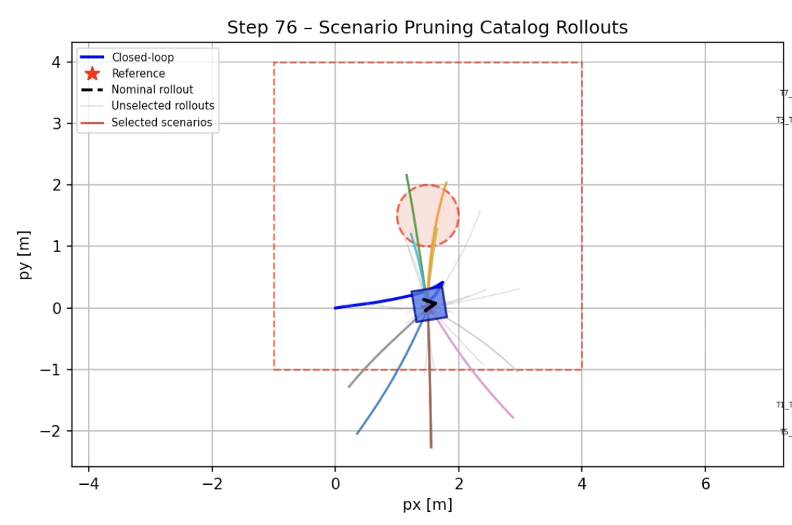
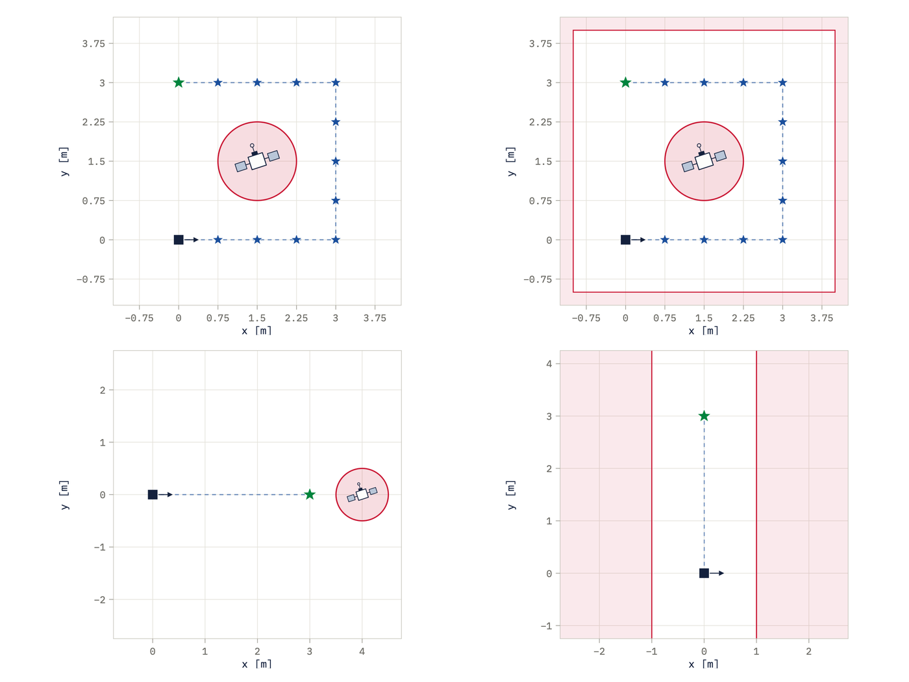
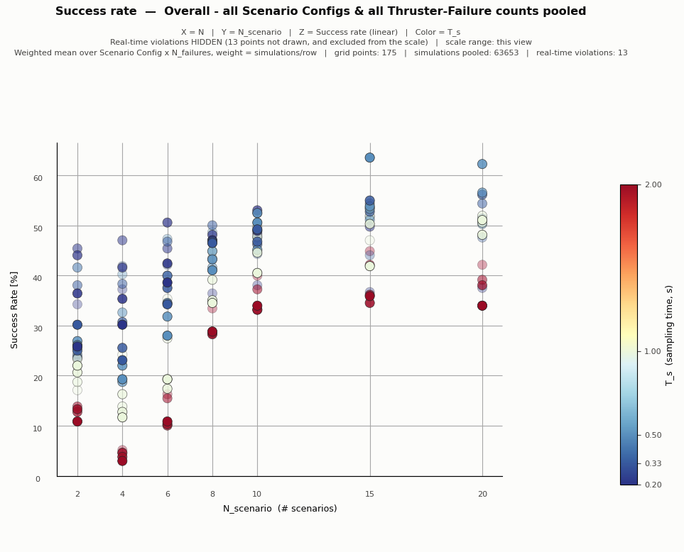
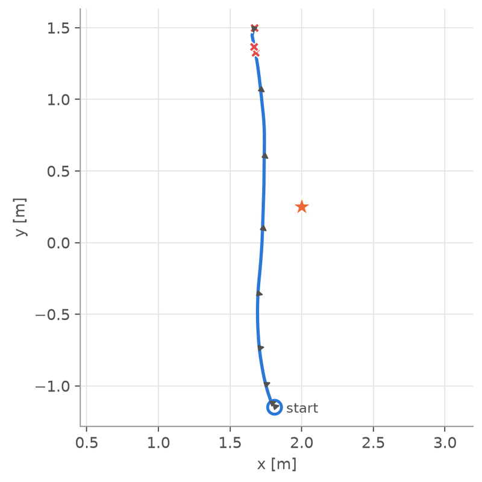
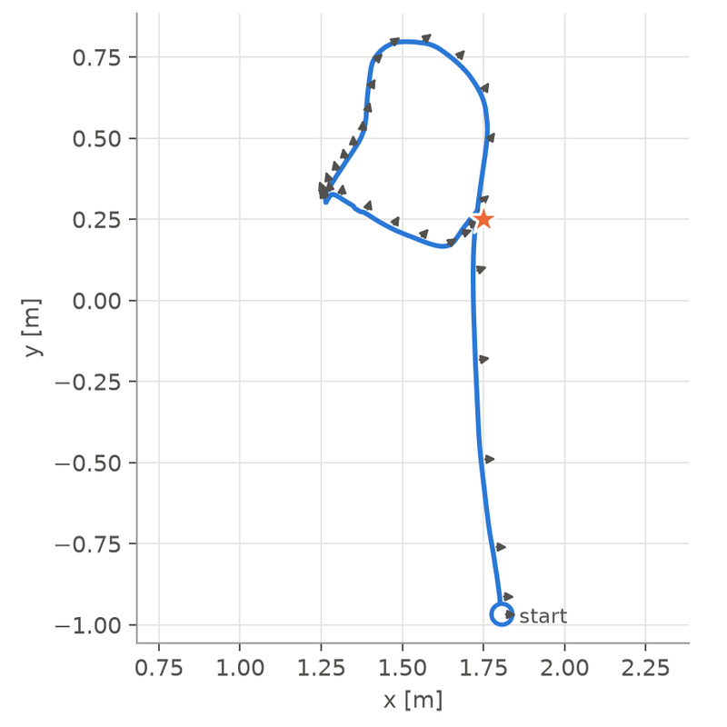
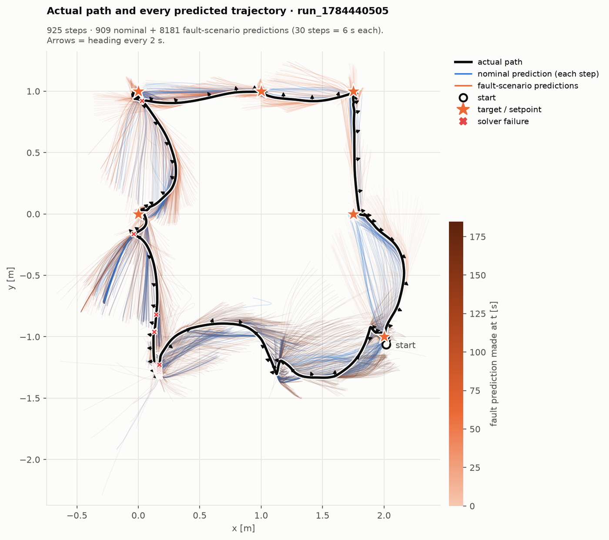

Inspecting outposts with nobody on board
Future outposts such as Gateway will spend long periods uncrewed, but their exterior still needs regular inspection. A small free-flyer could do it on demand, but only if it stays safe when its own hardware fails.
Today, inspection for micrometeoroid damage, leaks or degraded insulation means an EVA or a robotic arm. A free-flyer replaces both, but it has to meet four requirements:
Keep-out zones are hard constraints, not cost terms.
On small spacecraft, propulsion is the usual point of failure.
The optimisation must return inside each control period.
Without stopping to diagnose it first. This is the gap the thesis targets.
One plan that survives every failure scenario
Instead of waiting to find out which thruster failed, the controller plans against several candidate failures at once and commits to a single input sequence that is safe for all of them.
Existing approaches either use a single nominal model and fail on unexpected faults, detect the fault and then adapt (which takes identification time), or need a known disturbance distribution. Scenario-based MPC fills the gap between them.
Failure model
Each failure is a diagonal matrix Γ, with Γjj = 1 if thruster j works and 0 if it is stuck off, so the applied wrench becomes B u Γ.
Optimal control problem
The controller propagates S copies of the dynamics, one per failure scenario, and finds one shared input sequence that satisfies every constraint on every branch. It is re-solved at every control step:
Choosing which failures to hedge
Hedging every possible fault is intractable. At each step, the nominal plan is flown in prediction under each candidate failure, and each one is scored by how soon and how far it goes wrong (time to first violation, distance from the nominal path). The most critical failures fill the scenario slots.

Adding fault identification
Worst-case hedging is permanently conservative. The final version also estimates what is actually broken: each step, the last transition is scored against 163 candidate failures, and the controller hedges only the nominal model plus the most likely failure. That is two model copies instead of ten.
162 failure modes, four geometries, 648 runs
Every controller flew identical test cases with up to four stuck-off thrusters, including pairs that remove a whole translational axis.
A run counts as a clean success only if every waypoint is reached with no constraint violation. The controller was tuned over the horizon N, the step time Ts and the number of scenarios S. The lookahead (N × Ts) mattered more than either one alone, while S set the cost, since the stacked state grows as 6S.
Assumes all eight thrusters are healthy.
Hedges the most critical failures; never told which one occurred.
Adds residual-based identification of the failure.
Told the true failure at t = 0.


Fault identification closes the gap
With fault identification, the controller reaches 69.3% clean success, against 26.4% for nominal MPC, and matches a controller that is told the failure in advance (67.4%).
Clean success rate by number of failed thrusters
- Robust MPC + FDI
- Scenario MPC
- Failure-aware (told the failure at t = 0)
- Nominal MPC
Show the data
| Controller | 1 failed | 2 | 3 | 4 |
|---|---|---|---|---|
| Robust MPC + FDI | 100% | 99.1% | 79.9% | 45.4% |
| Scenario MPC | 100% | 74.1% | 37.5% | 11.8% |
| Failure-aware (told the failure) | 87.5% | 87.5% | 76.3% | 50% |
| Nominal MPC | 93.8% | 62.5% | 25% | 5.4% |
Scenario MPC beats nominal at every failure count: 54.1% against 42.4% with one to three failed thrusters, and the gap widens as more fail.
0.141 s per step for scenario MPC and 0.063 s with FDI, both well inside the 0.5 s control step.
Hedging flies more conservatively: 23% less total impulse than nominal MPC.
Tested on JPL's GSAT air-bearing sled
On the real 8-thruster sled, the robust controller reached the target in 14 of 19 runs (74%) with thrusters physically disabled, against 3 of 9 (33%) for the nominal controller, which succeeded only when nothing had failed.
The controller is implemented in F´ (F Prime) and runs on the sled with motion-capture state estimates, real thrust and real model mismatch. After each test condition, the most-used thruster was disabled for the next one, avoiding pairs that would remove a whole degree of freedom. Porting the solver from Python to C++ had cut the mean step time on a Raspberry Pi by about 3× (0.337 s to 0.114 s).
GSAT runs that settled within 15 cm of the target
- Robust scenario NMPC
- Nominal NMPC
Show the data
| Controller | 0 failed | 1 | 2 | 3 |
|---|---|---|---|---|
| Robust scenario NMPC | 3/3 | 8/8 | 3/5 | 0/3 |
| Nominal NMPC | 3/3 | 0/3 | 0/3 | not run |


Three failed thrusters is where the robust controller's margin runs out, with larger residual errors and repeated solver difficulty. The square-trajectory run in the video at the top of the page, flown with no failures, shows the controller tracking a full waypoint circuit around an obstacle.
